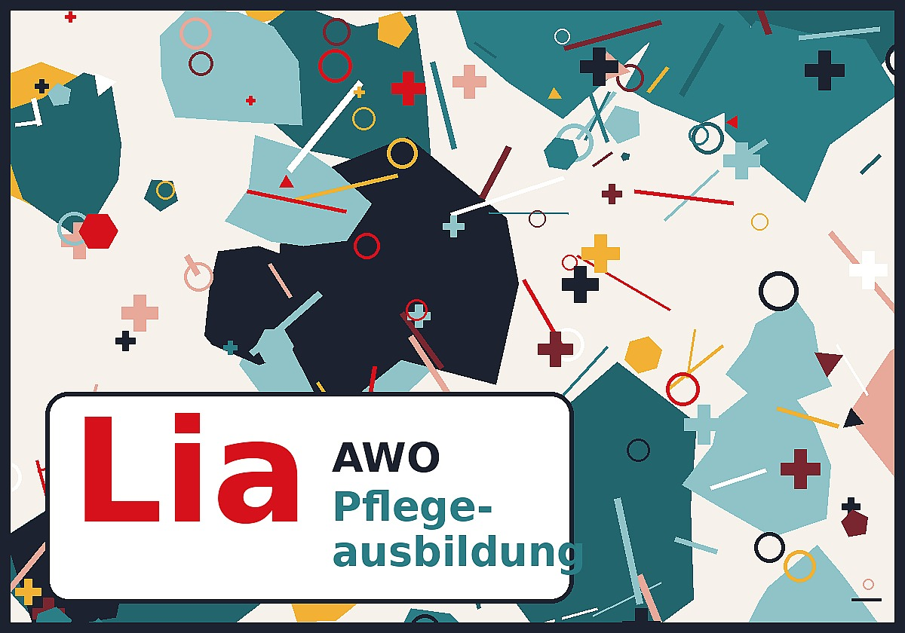

Lia ist Pflegefachperson und erklärt dir in drei Minuten die generalistische Pflegeausbildung.
Kamera und AR brauchen eine Verbindung über https. Bitte Ton am Handy einschalten.
Pflegeausbildung bei der AWO · Nursing training at AWO
Kamera erlauben, Handy auf den Tisch richten. · Allow the camera and point at your desk.
Version 19.10. · 14:30

Farbig auf mattes Papier drucken und flach hinlegen.